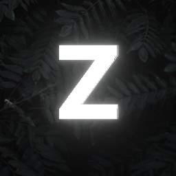

zextrah Web Developer • Programmer • Community Manager


I grew up in Detroit, where my passion for adventure and exploration really took root. Seeking better opportunities, I made the move to Dallas, Texas, and it’s been a game-changer for me. Diving into coding has become a new obsession, and I love every minute of it. I’m a huge sports car fan, and there’s nothing quite like hitting the open road on my motorcycle. In my downtime, I enjoy playing chess and gaming with friends. I also manage a few gaming communities and have my hands in developing games on Roblox, FiveM, and Minecraft. I’m always on the lookout to expand my skills and share my passions with others.